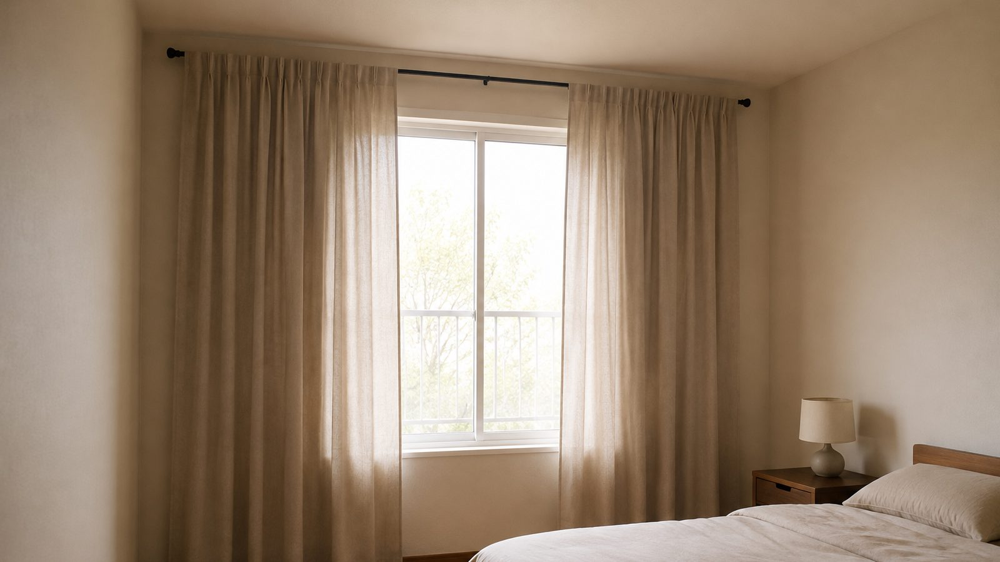
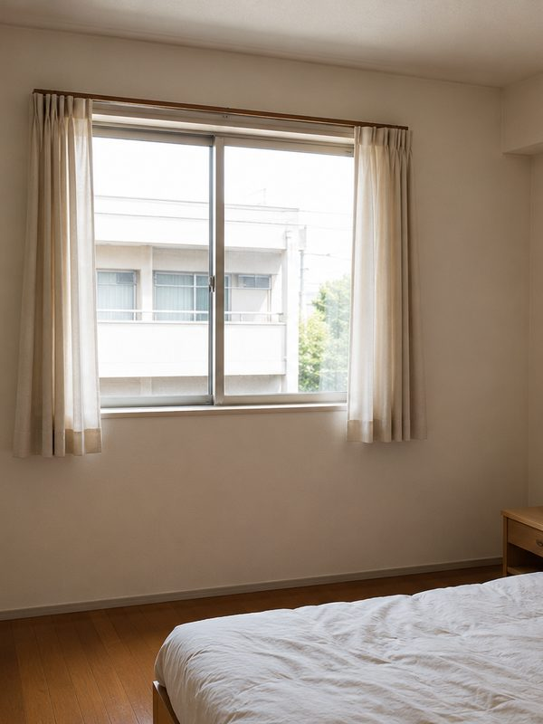
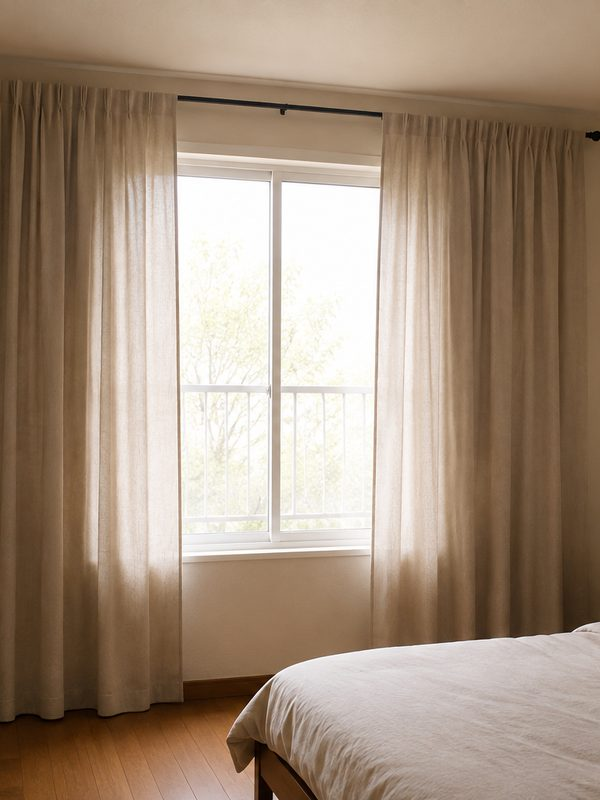
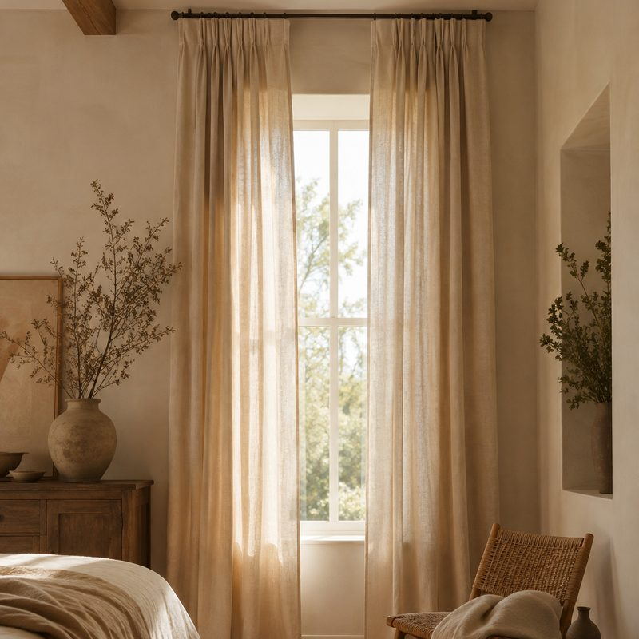
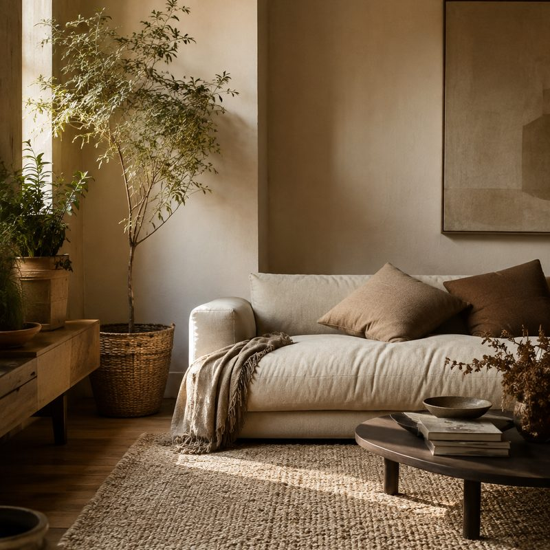

Almost every rental has the curtain rod screwed to the top of the window frame, with panels just wide enough to cover the glass. That is the cheapest way to hang a curtain and the fastest way to make a room look short.
As an Amazon Associate I earn from qualifying purchases. Links below are affiliate links (#ad) - they cost you nothing extra. Nothing here is a paid placement, and no brand sees this page before it goes up.
A rod fixed at the top of the window frame draws a hard line across the wall, and everything above it reads as leftover space. Move the same rod up to within 10-15cm of the ceiling and the fabric runs the full height of the wall.
Nothing about the room changes. The window is the same size, the ceiling is the same height. The eye simply follows the longest vertical line it can find, and you have just made that line much longer.


Extend the rod 15-25cm beyond the window frame on each side. When the curtains are open the panels stack on the wall rather than across the glass, so you keep the daylight and the window looks wider than it is.
This is also the fix for a window that sits off-centre on a wall - a wide rod lets you cheat the fabric across and the imbalance stops being obvious.
Length. Measure from where the rod will be, not from the top of the window. From a ceiling-height rod in a standard room that is usually 96 inch (244cm). Order the length that reaches the floor and just touches it - short curtains are the thing people notice without knowing why.
Weight. Light fabrics blow around and never hang straight. Linen and linen blends fall properly; thin polyester does not.
Colour. Close to the wall colour, not contrasting. A curtain that matches the wall extends it; a curtain that contrasts cuts the room in half.
Fixings. If you cannot drill, tension rods work inside a recess but not for ceiling-height hanging. Check what the wall will take before buying the rod.

Our illustration of the look - not the product photo96 inch is the length that reaches the floor from a ceiling-height rod in most rooms, which is the whole point of this page. Oatmeal sits close to a warm off-white wall so the fabric extends the wall instead of cutting it. Linen has enough weight to hang straight.
Best for: renters with standard ceilings who cannot move the window
See it on Amazon →paid link
Our illustration of the look - not the product photoThe floor half of the same idea. Once the curtains run floor to ceiling, a rug that is too small breaks the room up again. Ivory rather than brown - brown jute pulls a small room darker, ivory keeps it open and still hides what a floor does to a rug.
Best for: a room where the curtains are sorted and the floor still looks patchy
See it on Amazon →paid linkMove the rod up. It costs the price of a longer curtain and two new holes, and it changes the proportion of the whole room. Everything else on this page is tidying up after that one decision.
We look for pieces that change how a small room works, not the cheapest option and not the most photographed one. Everything here has to survive a rental: no drilling, no permanent fittings, nothing that needs a second person to install.
Room images on this site are our own illustrations, not photographs of the products. We link to the retailer so you can see the real item.
Written and selected by Rooms and Roads · Updated August 2026 · links checked August 2026